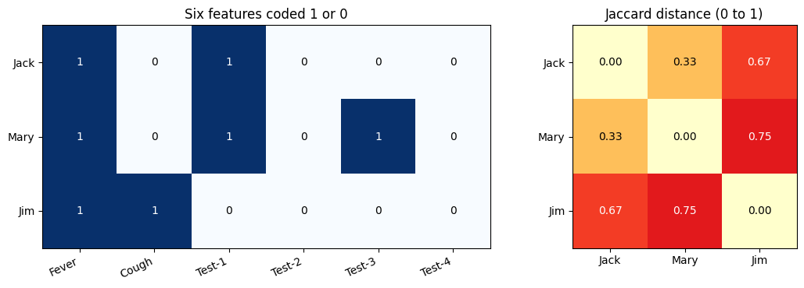

The Activity
Unit 5 · Run 30 October 2026 · Tutor: Dr Elizabeth Oladapo · Evidences learning outcomes 1 and 2
Activity guidance: from a table of pathological test results for three people, calculate the Jaccard distance for (Jack, Mary), (Jack, Jim) and (Jim, Mary), coding Y and P as 1 and N and A as 0, and leaving out Gender as a symmetric attribute.
Findings
| Step | What I did | Result |
|---|---|---|
| Jaccard distance (3 pairs) | Counted shared and unshared positives over the six tests and symptoms, then checked the formula against Python sets and SciPy | (Jack, Mary) 1/3 ≈ 0.33; (Jack, Jim) 2/3 ≈ 0.67; (Jim, Mary) 3/4 = 0.75. All three methods agreed. |
| A as missing | Left out, for each pair, any feature where either person has A | Jaccard unchanged, but only because every A meets a 0; simple-matching distance changed for every pair. |
| Adding Gender | Added Gender as one equally weighted symmetric feature, as a sensitivity check | (Jack, Mary) and (Jack, Jim) tie at 0.50, so Jack’s nearest match depends on whether Gender counts. |

Jack and Mary are the most similar pair, while Jim and Mary are the least similar, consistent with Han, Kamber and Pei (2012). Checking the results helped me understand that Jaccard ignores shared zeros, making it important to know whether a zero means a negative result or simply that no test was performed. If these were real patient records, removing names alone would not guarantee anonymity. Before clustering such data, I would first clarify what the value A represents and ensure that the selected attributes and similarity measure are appropriate for the analysis.
Evidence
I ran the notebook in Google Colab. Its first code cell records the run, and all 9 code cells completed without errors:
Run by Anne Dayer (student 39359) in Google Colab on 30 October 2026 at 18:44 UTCAI Acknowledgement
Codex was used to assist in identifying appropriate code solutions and to proofread and refine the code I produced. Claude and Grammarly supported proofreading, language refinement, and formatting of my written text. All final decisions, analyses, interpretations, conclusions, and recommendations are my own.
References
Han, J., Kamber, M. and Pei, J. (2012) Data Mining: Concepts and Techniques. 3rd edn. Waltham: Morgan Kaufmann.